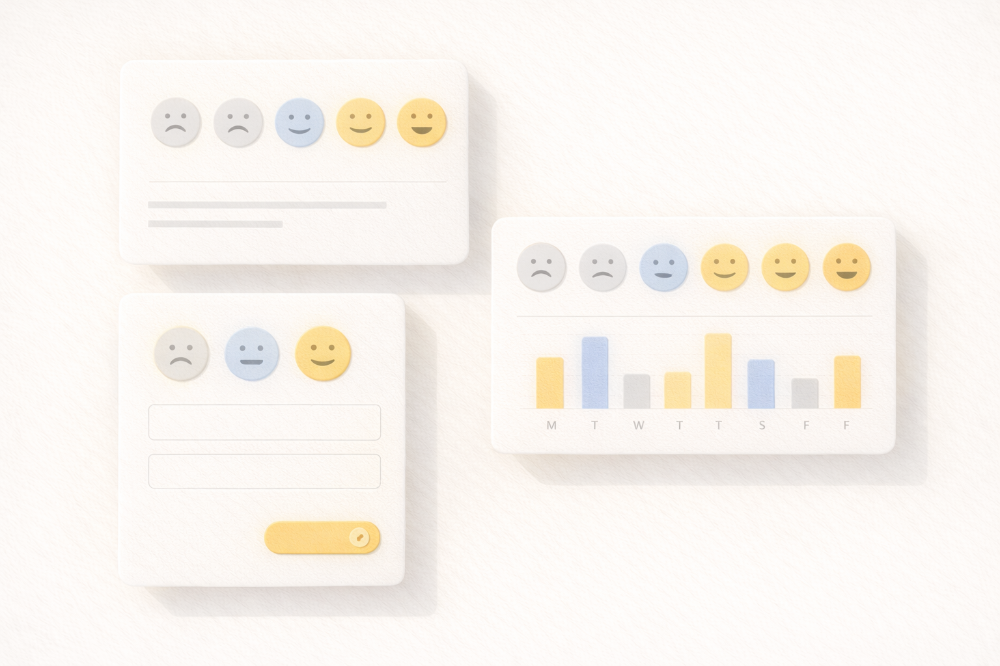
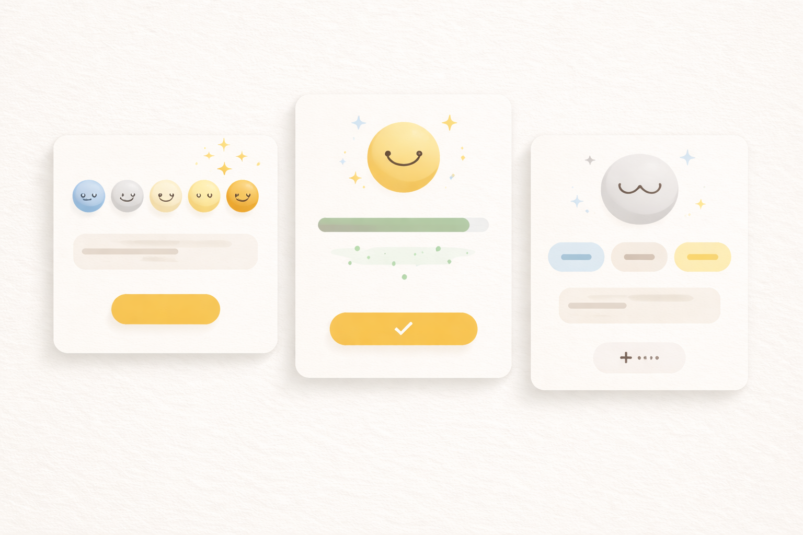

MoodBox（情绪盒子）
返回作品列表
项目简介：MoodBox 是一款“情绪记录小组件”，在极小的空间里承载“记录、反馈、仪表化”的体验闭环。它也是我练习“在限制里做设计”的长期作品。
我负责的部分
- Widget 信息结构与视觉风格定义（更少但更准）。
- 与开发协作：基于 iOS/WatchOS 限制做交互取舍与状态定义。
- 上架前的细节打磨：字体、对比度、动效反馈、空状态。
结果
- App Store 累计下载 5,000+。
- 获得 Product Hunt 推荐（简历记录）。
关键画面（示意图）

Widget 组合
在极小空间里承载记录与反馈，用层级与对比度控制信息密度。

微交互反馈
用更短的反馈路径让用户持续记录，并强化“完成感”。